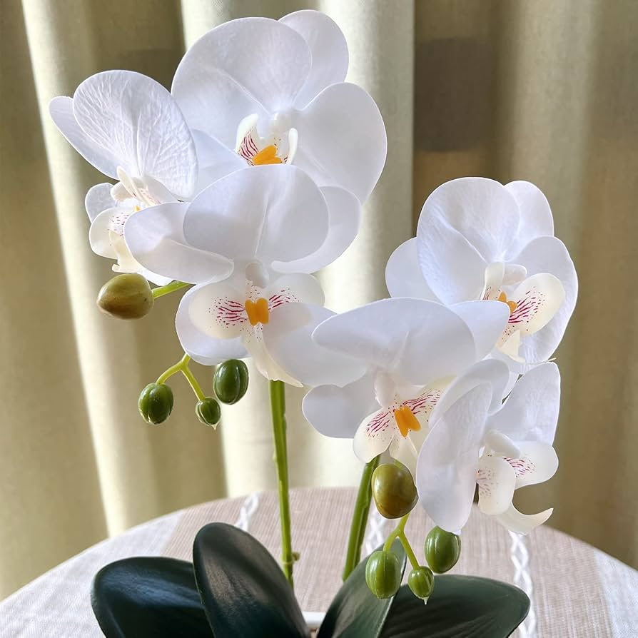
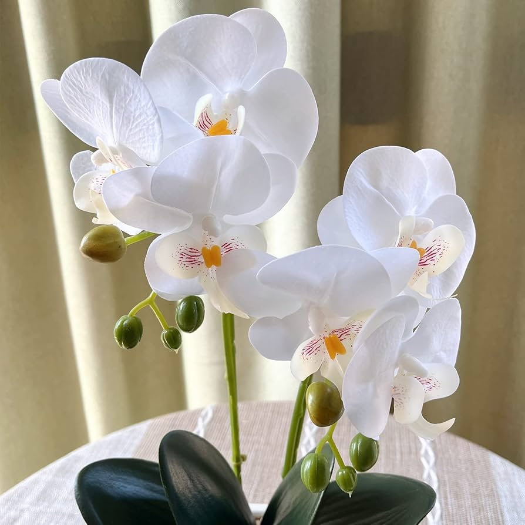

Orquideas |
Rosas |
Cempasúchil |
Dalia |
Vainilla |
Nochebuena |
Cacao |
Agave de Tequila |
Ahuehuete |
Cedro |
Flor de izote |
Maíz |

Las plantas no tienen cuerdas vocales por lo que no pueden hablar con nosotros, pero, si usan señales químicas y electrónicas para coordinar respuestas a su entorno. Cuando una planta sufre daño como al ser cortada, libera proteínas que actúan como señales de alerta para las plantas cercanas. Estas señales permiten a las plantas vecinas cooordinar sus respuestas al entorno y prepararse para posibles amenazas o cambios en su entorno. Las plantas utilizan un sistema de comunicación complejo, aunque diferente al de nosotros, para interactuar y sobrevivir.

Charles Darwin escribio en su libro seminal "El movimiento de las plantas", publicado en 1880, describió la capacidad de las plantas para alejarse o acercarse a la luz. Los científicos denominan a este fenómeno fototropismo . Sin embargo se ha descubierto que el crecimiento vegetal no sólo se rige por la luz, sino que también por la disponibilidad de agua y nutrientes , el pastoreo de los animales y la competencia de otras plantas. Aunque las plantas pueden parecer inmóviles, en realidad ajustan continuamente sus hojas, raíces y tallos para optimizar su supervivencia. Por ejemplo, las partes de los tallos expuestas a la sombra se alargan para dirigir el crecimiento hacía la luz, un proceso regulado hormonalmente. Las raíces, por el contrario, crecen alejándose de la luz. En algunas situaciones extremas, algunas plantas pueden desplazarse a través de un bosque entero. Ciertas enredaderas , por ejemplo , ascienden por el tronco de un árbol , se separan del suelo, desarrollando raíces aéreas y descienden, permitiendo asi su movimiento entre árboles.

Los organismos son muy sensibles a los cambios que hay en su entorno y las plantas se han utilizado para detectar estos cambios. En otoño cuando las hojas comienzan a cambiar de color suelen indicar la llegada de meses más fríos y oscuros. Desde 1980, la temperatura global ha aumentado ha causa de la quema de combustibles fósiles como el carbón, que fue depositado hace millones de años por plantas durante la formación temprana de los bosques.

Las plantas tienen la habilidad de modificar su entorno y son esenciales para la adaptación de la vida en diferentes condiciones. Durante la carrera espacial entre la URSS y Estados Unidos, se realiizaron estudios sobre el crecimiento de plantas en el espacio, logrando cultivar 17 especies en cámaras especializadas. Sin embargo, aún existen desafíos, como la radiación y las diferencias en el movimiento de gases en el espacio. A pesar de las dificultades, el avance en la ciencia de las plantas sugiere que es posible transformar otros planetas para hacerlos habitables para los humanos.
Orquideas |
Rosas |
Cempasúchil |
Dalia |
Vainilla |
Nochebuena |
Cacao |
Agave de Tequila |
Ahuehuete |
Cedro |
Flor de izote |
Maíz |
Primero deberías buscar un espacio disponible, puede ser tu jardín, un huerto urbano, terraza, balcón o al interior de tu casa. Si vas a plantar en el suelo, abona la tierra. Si es que usarás macetas tienen que tener agujeros de drenaje y utiliza un sustrato adecuado. C+onsidera las necesidades de agua, luz y espacio de las plantas que quieras cultivar. Puedes iniciar con plantas arómaticas como la hierbabuena, romero, cilantro y pereji, que son fáciles de cultivar. Para las sembrar, lávate las manos y humedece el sustrato antes de sembrar, haz pequeños agujeros y coloca las semillas dentro, cubre con tierra. Para plantar, prepara un hoyo en la tierra del tamaño de maceta y transplanta la planta con cuidado. Riega regularmente tu planta, asegurándote de que el sustrato este húmedo más no encharcado. Agrega abono para nutrir tus plantas. Inspecciona regularme tus plantas para detectar algún problema como plagas o enfermedades.
Se utiliza para aliviar dolores del estómago, preparar infusiones relajantes y problemas digestivos debido a sus conocidas propiedades calmantes y antiflamatorias.
Se ha demostrado que ayuda a aliviar náuseas, mejorar la digestión, reducir la tos e incluso podría ayudar a controlar los niveles de azúcar en la sangre en personas con diábetes tipo 2. También es conocida por sus propiedades antioxidantes, antiflamatorias y digestivas
Tiene propiedades antiflmatorias, antifúngicas y antioxidantes. Se ha utilizada tradicionalmente para tratar diversas afecciones como problemas digestivos, problemas de circulación y dolores musculares
nh
Hierbabuena o menta verde, es conocida por su barios usos medicinales, como la mejora de digestión, el alivio de dolores, la reducción del estrés y el tratamiento a afecciones respiratorias. Igual se utiliza para la higiene bucal y el cuidado de la piel.
También conocida como aloe vera, esta planta suculenta cuenta con varias propiedades medicinales y cosméticas. Se utiliza para tratar afecciones de la piel como el acné, quemaduras, psoriasis, esto gracias a sus propiedades antiflamatorias, antibacterianas y cicatrizantes.

Sus propiedades antisépticas, expectorantes y antiflamatorias, se suele utilizar para tratar gripes, resfriados y afecciones respiratorias. Sus hojas y aceites se utilizan en baños de vapor, inhalaciones y en productos de higiene.

Se utiliza para aliviar dolores, estimulación de la mestruación, la mejora de problemas digestivos y respiratorios , también se utiliza como sedante ya que ejerce efectos calmantes, y relajantes
Tiene varios usos medicinales como la reducción de la ansiedad, la disminución de la inflamación, alivia dolores estomacales y mejora la salud cardiovascular y el sistema inmunológico, ayuda con el insomio y el estrés al igual ayuda con la salud dental.
Además de ser un condimento también tiene propiedades medicinales, como es el disminuir los niveles de colesterol, disminuir el riesgo de sufrir Alzheimer y demencia. También ayuda a combatir la diábetes y reducir la presión arterial, ayuda con el dolor de garganta, resfriados y infecciones por hongos.
Es una planta medicinal con varios usos, especialmente ayuda con afecciones respiratorias y problemas digestivos. Ayuda a aliviar los dolores de garganta, inflamación de las vías respiratorias, congestión nasal, calmar problemas estomacales, ayuda a aliviar dolores musculares y osteoarticulares.Tiene propiedades antifúngicas, antiviricas y antibacterianas lo que lo hace útil para tratar infecciones de vias respiratorias.
Es una planta aromática y medicinal utilizada para aliviar los síntomas de un resfriado, tos , problemas respiratorios, aliviar la ansiedad, también se puede utilizar para disminuir los niveles de glucosa en la sangre.Se suele usar para combatir vómitos, náuseas, dolor de muelas o garganta, quemaduras e infecciones en el oído. Tiene propiedades antimicrobianas, analgésicas y antiflmatorias.
Es una planta medicinal con varios usos, como tratar dolores de estómago, diarreas, gastritis, irritación en la boca y garganta, infecciones en la piel, hemorragias intestinales además se considera que ayuda a disminuir la glucosa en la sangre y prevenir la diábetes.Tiene propiedades antioxidantes y antiflamatorias.
Conocida por su reljante aroma, tiene varios usos medicinales. Ayuda a la reducción de la ansiedad, el estrés e insonmio.También ayuda a aliviar dolores, inflamaciones y problemas en la piel como picaduras, quemaduras, heridas y problemas de acné y caída del cabello, alivia el resfriado y dolor de garganta, igual ayuda a comatir piojos. Alivia mareos y ayuda a la digestión.Tiene propiedades antiflamatorias y antibacterianas.